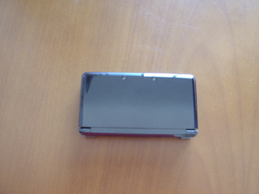

Uma pessoa cega, Mais um 3DS, é Igual a... O Quê?
Na verdade, não sei ainda. Mas o ponto é ... Eu comprei um 3DS.

Eu não tinha interesse em nenhum jogo em particular, mas como os botões do meu DS Lite de cinco anos de idade (principalmente as setas e o botão "A") estão ficando frouxos, comecei a considerar fazer um upgrade. Meu plano era comprar o console novo talvez no ano que vem, mas eu achei um 3DS barato numa loja perto de casa. Custou R$479,00, foi o 3DS "não usado" mais barato que encontrei até hoje. Não sei se era promoção para queimar estoque e substituir tudo pelo 3DS XL que acabou de ser lançado por aqui, nem sei se ainda tem mais por esse preço onde eu comprei... Mas estava bem barato para os padrões brasileiros.
Segue a minha review do 3DS:
Embalagem
Ele veio em uma caixa tão grande que poderia caber dois 3DSs. Os manuais de instrução são mais volumosos do que o console propriamente dito.
Cartão SD
Antes de comprar o 3DS, eu tinha ouvido falar que cartões SD eram necessários para armazenar imagens, sons e jogos comprados do E-Shop, e que um cartão SD de 2GB já vinha junto com o console. Quando comprei, procurei, procurei e não achei... Fiquei revirando a caixa enorme, pensando que talvez ele estivesse perdido no meio daquele monte de manuais, e nada. Só depois fui descobrir que na verdade ele já estava dentro do console. Ops ...
Botões

Comparado ao DS Lite, a disposição dos botões é bem semelhante, com a adição de um botão analógico esquerdo (algumas pessoas dizem que gostariam que o 3DS tivesse dois, mas eu não queria nenhum! Como eu detesto botões analógicos. Nunca gostei. Mas é apenas a minha preferência pessoal, nada pode ser feito a respeito). As setas ficam um pouco mais para baixo em relação aos direcionais dos Dss antigos, por causa do analógico. Infelizmente, assim como no outro DS, a touch screen (a tela de baixo sensível ao toque que sempre foi o "charme" do DS desde o primeiro modelo) é simplesmente impossível de ser usada por alguém sem o recurso da visão. As setas (à esquerda), os botões redondos ("A", "B", "X" e "Y" à direita), e os laterais superiores ("L" e "R") são confortáveis o suficiente para mim, apesar de estarem meio duros, provavelmente porque o console ainda tem pouco uso. Os botões "Start", "Select" e "Home" são um pouco difíceis de localizar via tato, mas ainda vou me acostumar(espero).
Configurações
Uma coisa que achei interessante é que as telas de configuração têm instruções detalhadas, fáceis de seguir, e em Português! Na minha opinião, bastante amigáveis para iniciantes (e provavelmente bem mais informativas e menos chatas do que aquele monte de manuais grossos :P). Tudo bem explicadinho, só faltava o 3DS falar, daí seria amigável para quem não enxerga também, mas aí já é querer demais...
Jogos
Jogos de DS normais rodaram sem problemas. Não tenho nenhum jogo de 3DS para testar, mas ele vem com alguns minigames para que as pessoas possam ter uma ideia dos recursos 3D. Eles são jogados utilizando um cartão de realidade aumentada (AR Card) que vem com o 3DS e mostra os minigames em 3D. Existem outros cartões que mostram personagens da Nintendo posando em 3D e você pode olhá-los de vários ângulos e tirar fotos deles. Eu não consigo ver, então não posso aproveitar ao máximo, mas é interessante saber que há algo para brincar, mesmo antes de comprar qualquer jogo.
Câmeras
Sim, "câmeras" (plural). Outro recurso com o qual eu não me importo. E na falta de uma, ele tem três. Uma na parte da frente para tirar fotos normais e gravar vídeos, além de duas na parte de trás para fotos e vídeos em 3D. A resolução não é muito boa (hoje em dia, qualquer celular deve ter câmeras melhores que as dele), mas é preciso considerar que as fotos estão no tamanho para serem visualizadas na pequena tela do 3DS, principalmente as em 3D que (por enquanto) só funcionam nele.
As câmeras também são usadas para interagir com os AR Cards e jogar os minigames.
Som
O 3DS pode funcionar como um tocador de música, com visualizações e tudo. Reproduz MP3 e arquivos AAC com extenções ".3gp" e ".m4a . Também pode gravar clipes de som por meio do microfone e aplicar alguns efeitos aos arquivos de áudio nos formatos suportados, como alterar o tom e a velocidade.
Os auto-falantes são da qualidade típica de dispositivos portáteis, então, para tirar máximo proveito do áudio de jogos e músicas, o melhor é usar fones de ouvido ou ligar o 3DS a algum alto-falante externo. No entanto, no caso de fones de ouvido (não testei com auto-falantes externos ainda), ao contrário do DS Lite, tanto o volume do fone quanto o do 3DS devem ser colocados no máximo para poder ouvir coisas em um volume aceitável (isto é, não muito baixo nem muito alto), então o uso de fones de ouvido provavelmente não vai ajudar a consumir menos bateria. Falando nisso ...
Duração da bateria
Como eu já tinha ouvido falar, a vida útil da bateria é um pouco decepcionante. Não sei qual o padrão de duração das baterias de aparelhos recentes, então não sou uma das melhores pessoas para falar sobre isso, mas a bateria do meu 3DS dura o mesmo, se não menos, que a do meu DS Lite. Mesmo com o wireless e o 3D desligado, o brilho colocado no mínimo e o som na metade do volume (como eu não posso ver, um jogo sem som é o mesmo que nada), a bateria dura no máximo seis horas.

Conclusão
Fora a curta duração da bateria e o baixo volume do som nos fones de ouvido (e o analógico esquerdo), eu estou satisfeita com o console em geral. Não posso desfrutar do 3D, nem tenho jogos que usam o máximo dos recursos para testar ainda (fora os minigames inclusos), mas eu já comprei o console sabendo das minhas limitações, então esses resultados já eram esperados. Enquanto o meu DS antigo continuar funcionando, os dois serão ótimos companheiros. Agora posso finalmente trocar/evoluir meus pokemons entre os dois DSs :P.
Links Relacionados
- Site oficial brasileiro do Nintendo 3DS
- Site oficial em Inglês do Nintendo 3DS
- O artigo da Wikipedia sobre o 3DS (em Português)
- O artigo da Wikipedia sobre o 3DS (em Inglês)
- Uma análise bem completa dos minigames inclusos que usam os AR Cards (em Português)
- Uma wiki sobre 3DS (em Inglês)
- Jogos de 3DS na Play-Asia (em Português)